壹刻传媒文件获取及使用教程
下载软件
下载地址:
点击下载
下载后安装软件
注：此软件为安卓软件，目前壹刻传媒杂志壁纸应该只在安卓机上使用。
使用软件
-
1. 【开始】
打开软件，点击图中红框
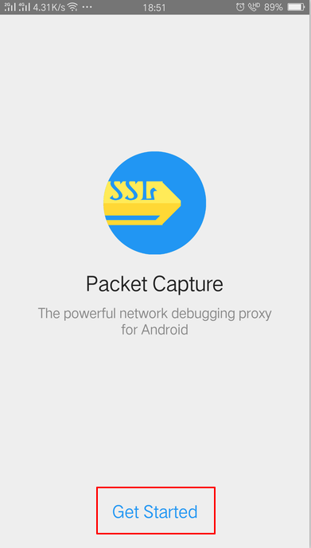
-
2. 【继续】
点击图中红框
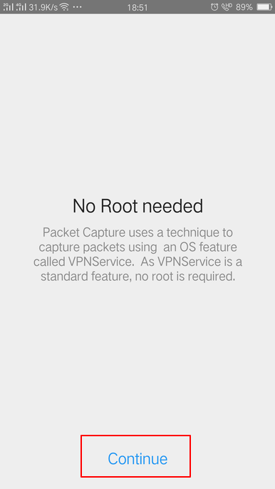
-
3. 【安装证书】
点击图中红框
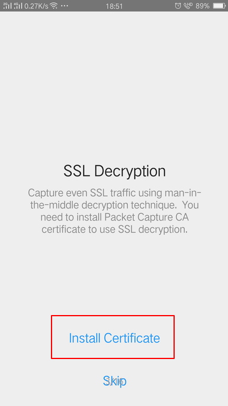
-
4. 【保存证书】
点击图中红框
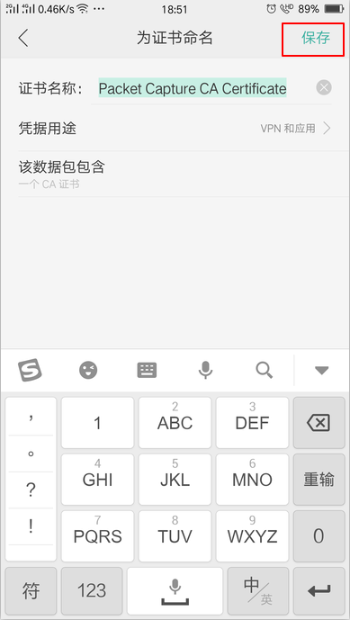
-
5. 【开启单个应用抓包】
点击图中红框
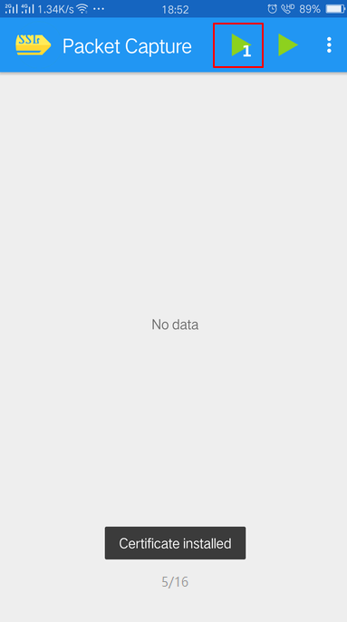
-
6. 【搜索锁屏杂志并点击】
点击图中红框
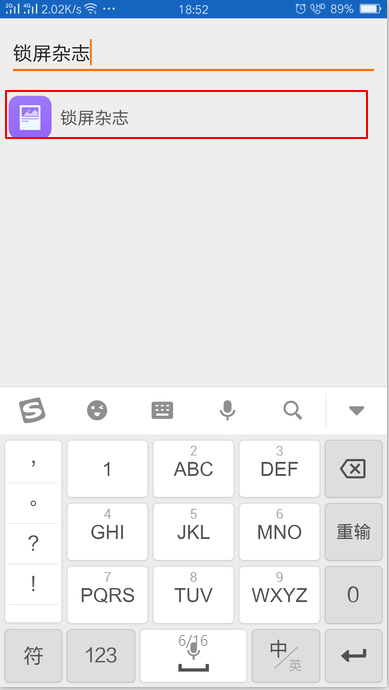
-
7. 【创建临时VPN】
点击图中红框
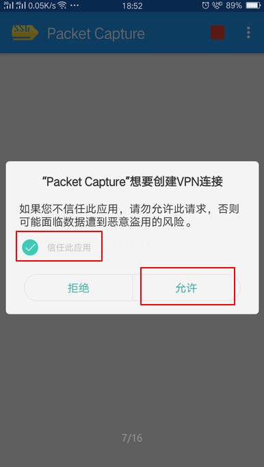
-
8. 【如下图】
点击图中红框
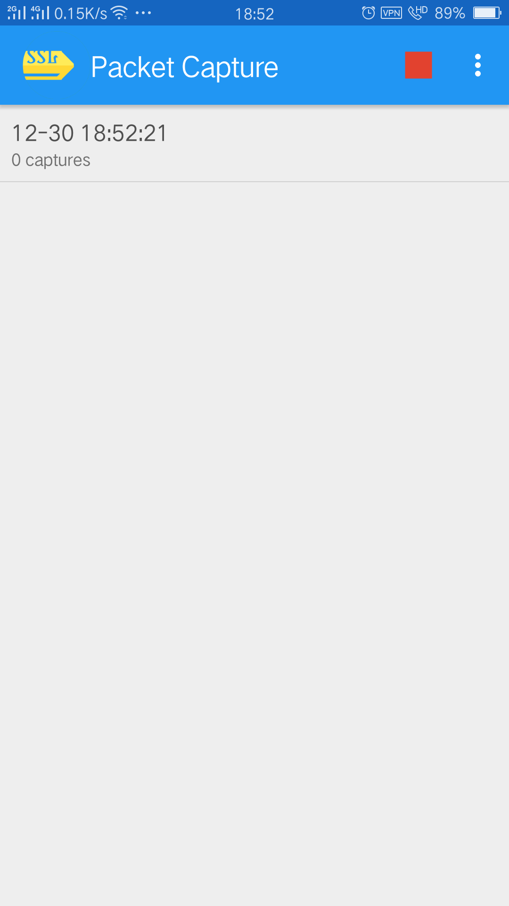
-
9. 【开启锁屏杂志】
点击图中红框
如果开启了跳过此步
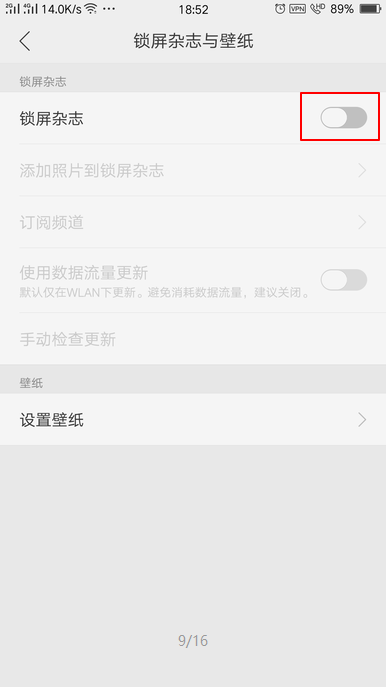
-
10. 【更新壁纸】
如果没自动更新
点击图中红框
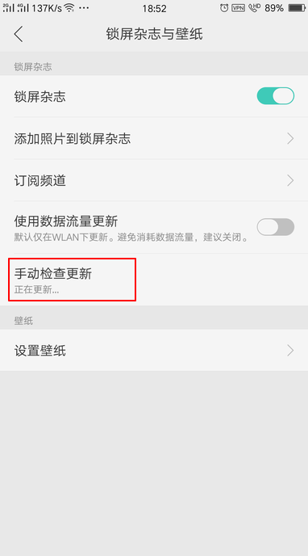
-
11. 【更新壁纸完成】
如下图
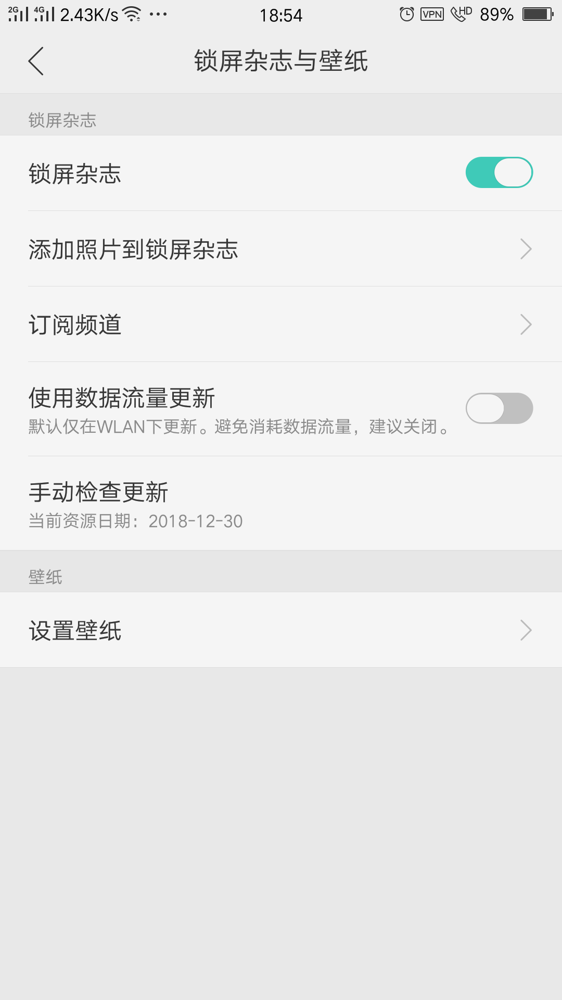
-
12. 【获取抓包】
点击图中红框
这时候有1个抓包
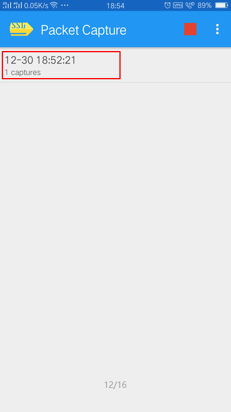
-
13. 【查看抓包】
点击图中红框
这里有一个26K抓包的更新
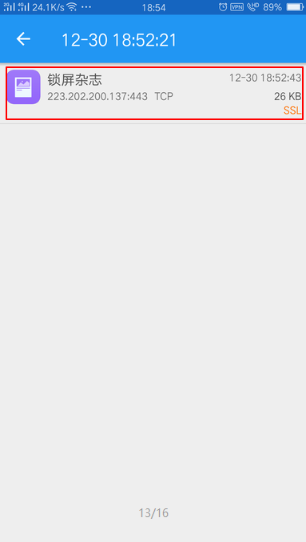
-
14. 【获取文件】
点击图中红框
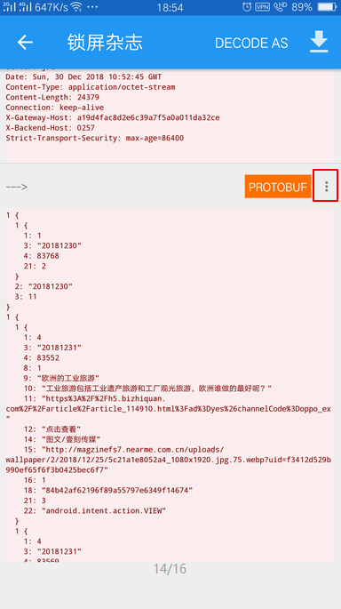
-
15. 【保存文件】
点击图中红框
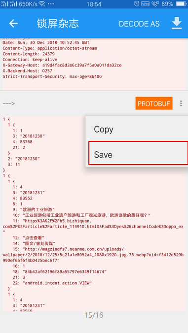
获取文件
解析文件
打开网站
选择文件
点击在线提取
如果提取成功，下方会显示解析后的图片文字
获取图片
点击下载链接
即可保存无压缩超清图片